DESIGNED BY TECHONE
DESIGNED BY TECHONE

EXITTurunan kedua digunakan untuk menentukan percepatan dan titik belok suatu fungsi. Dalam fisika, percepatan dapat ditulis sebagai:
a(t) = d²s/dt²
Konsep turunan banyak digunakan dalam gelombang suara, arus listrik AC, gerak melingkar, teknik sipil, dan navigasi. Contoh fungsi gelombang:
y = A sin(ωt)